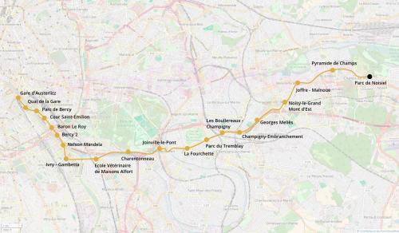

M10 Est - Noisiel
M10 Est - Noisiel
Gare d'Austerlitz - Parc de Noisiel
Une extension de la ligne 10 du métro.
Le prolongement de la ligne 10 à Noisy-le-Grand, parallèle à l'autoroute A4 vise à un report du trafic automobile depuis l'autoroute vers le métro.
Il permettra de relier la zone d'Ivry-sur-Seine - Charenton à l'est du Val-de-Marne et à Marne-la-Vallée. La station Parc de Bercy permettra une nouvelle desserte du POPB et de la bibliothèque François Mitterand.
En plus de cela, avec le métro 10 il sera possible d'aller simplement de Cours-Saint-Émilion à Charenton, ce qui est actuellement difficile à cause du Boulevard périphérique et de l'échangeur de Bercy (A4).
Voir les autres projets associés à cette ligne
Carte
{kind=link}

Cliquer pour agrandir
Stations
Si ce projet vous intéresse n'hésitez pas à le (re-)partagez sur les réseaux sociaux ou par courriel ou à en parler autour de vous.
Si vous souhaitez travailler à la concrétisation de ce projet, passez à l'action et contactez nous.
Commenter